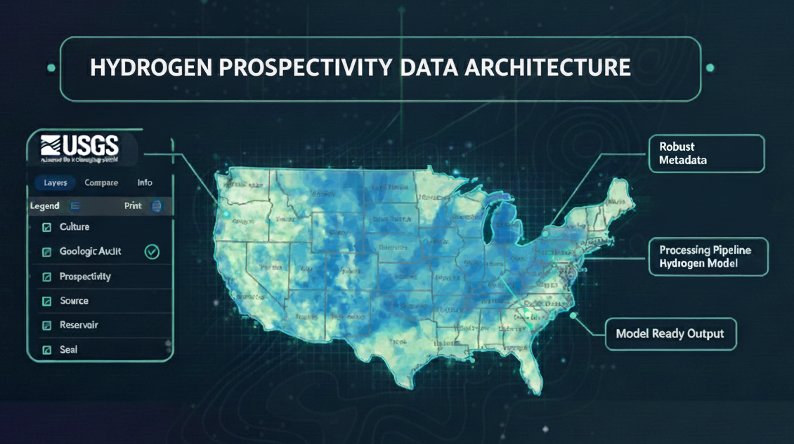

Chris Skinner
Designing data platforms where lineage, quality, and trust are built in.
I design and operate long-lived data platforms in complex, regulated environments where data must remain trustworthy over time. My work focuses on integrating imperfect, multi-source data; embedding governance, lineage, and security into daily operations; and delivering systems that support real analytical and decision-making needs.
Rather than optimizing for individual tools or short-term outputs, the case studies below highlight architectural patterns—how constraints become durable designs, how uncertainty is handled explicitly, and how data products are made reliable for sustained use across teams and domains.
What I solve
- Governed data products with traceable lineage
- Metadata programs that sustain over time
- Quality controls for regulated, multi-team platforms
How I work
- Translate constraints between stakeholders and engineering
- Favor repeatable pipelines over one-off heroics
- Design for long-lived teams and maintainable delivery
Selected Architecture Case Studies
1) Multinational Oil & Gas Data Integration & Analysis Platform
Architecture pattern: Multi-stream subsurface data integration with explicit handling of uncertainty and parallel interpretations.
Summary: Supported a multinational subsurface data integration and analysis environment combining vendor-licensed datasets, proprietary inputs, and locally developed geological interpretations. The focus was pragmatic delivery of usable, defensible data for regional and global studies—despite imperfect alignment across domains.
Key contributions
- Integrated licensed vendor, proprietary, and locally interpreted data under contractual and governance constraints
- Supported parallel data streams across wells, production, formations/tops, geochemistry, seismic, with spatial and temporally versioned interpretations
- Performed QA/QC and cross-checks to surface inconsistencies, uncertainty, and gaps
- Helped operationalize stratigraphic and formation data used in subsurface characterization
- Built Python/SQL workflows for ingestion, validation, reconciliation, and recurring analytics
- Implemented role-based access controls, auditing, and security enforcement aligned with least-privilege principles
Why it matters
Reflects real upstream data environments where value comes from disciplined integration, transparent uncertainty, and repeatable delivery—not from forcing a single authoritative view.
Conceptual integration layer for governing parallel subsurface data streams and delivering analysis-ready outputs.
2) Metadata-Driven Data Catalog & Governance Platform
Architecture pattern: Metadata-first governance with automated validation, lineage, and catalog readiness.
Summary: Architected and operated a governed, metadata-first data release catalog for multi-terabyte scientific datasets, embedding quality checks, lineage documentation, and reproducible publication workflows.
Key contributions
- Defined and enforced metadata standards (FGDC/ISO) and controlled vocabularies
- Built automated validation and review workflows for data and metadata quality
- Implemented lineage and documentation practices supporting stewardship and discoverability
- Operated the platform through repeated release cycles while balancing rigor and delivery
- Enforced access controls, audit logging, and least-privilege permissions across data, metadata, and release workflows
Why it matters
Demonstrates how governance can function as operational infrastructure, aligning directly with catalog-led enterprise models (e.g., Purview-style data maps and stewardship workflows).
Metadata and governance span the data lifecycle, enabling secure, auditable, and reproducible data products from acquisition through publication.
3) Hydrogen Prospectivity Data Architecture
Architecture pattern: Analysis-ready data architecture enabling reproducible feature engineering and explainable analytics.
Summary: Designed the data architecture supporting hydrogen prospectivity analysis by integrating heterogeneous geologic and geochemical datasets into harmonized, analysis-ready structures.
Key contributions
- Designed schemas and integration patterns for diverse scientific and proprietary inputs
- Built reproducible data preparation pipelines supporting feature engineering
- Documented transformations, assumptions, and lineage to support transparency and reuse
- Delivered governed, analysis-ready datasets rather than one-off model outputs
Why it matters
Shows how disciplined data architecture underpins Open Data initiatives for credible analytics, repeatability, and reusability.
Hydrogen prospectivity analysis integrating geologic, geochemical, and spatial datasets into a governed, analysis-ready framework.
Additional Architecture & Governance Work
Enterprise Geochemistry Data Platform
Helped establish and modernize an enterprise geochemistry database by integrating legacy data systems, aligning data structures with QMS-audited laboratory workflows, performing extensive QA/QC, and preparing validated, well-documented public data extracts suitable for external review and reuse.
Orphaned Wells & Environmental Risk Data Platform
Integrated well integrity, groundwater, and environmental datasets into a governed risk-ranking platform supporting environmental analysis, regulatory review, and decision-making.
Enterprise Data & GIS Platform Modernization
Led modernization of legacy enterprise data and GIS platforms, including administration of enterprise GIS environments, support for public-facing applications, maintenance of internal data catalogs, and synchronization between enterprise systems through automation, schema standardization, governance controls, and improved operational reliability.